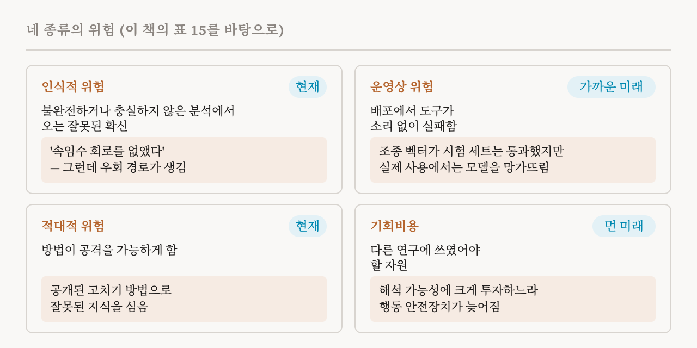
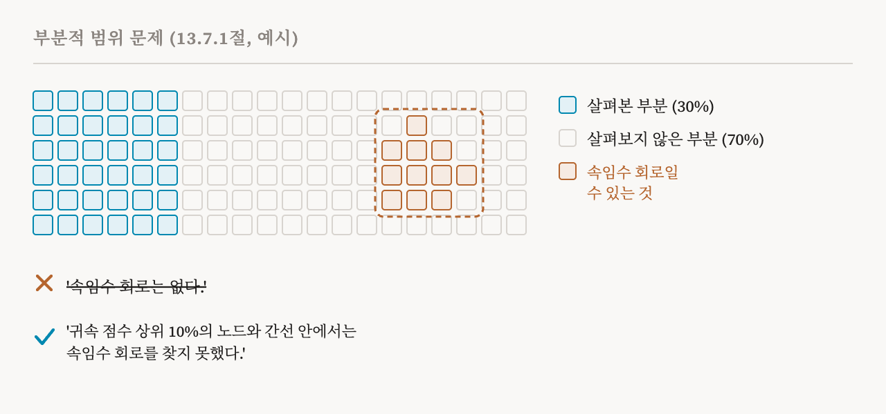

34편부터 36편까지는 기계적 해석 가능성이 안전을 위해 무엇을 할 수 있는지 보았습니다. 이번 편은 이 책 13장의 나머지인 13.5–13.7절(119–123쪽)입니다. 어떤 방법이 어떤 안전 업무에 맞는지, 그리고 해석 가능성 자체를 안전에 기댈 때 무엇이 잘못될 수 있는지입니다.
안전 업무에 맞는 방법 고르기
안전 응용마다 알맞은 기법이 필요하고, 그것이 기계적인 기법만은 아닙니다. 이 책은 흔한 안전 응용 여섯 가지와, 각각에서 가장 중요한 것, 그리고 가장 유망해 보이는 방법을 정리합니다. 안전이 중요한 시스템을 배포하는 실무자에게는 검토해 볼 방법의 목록으로, 연구자에게는 자기 방법을 시험해 볼 상황의 목록으로 이 표를 내놓습니다.
| 응용 | 가장 중요한 것 | 유망한 방법 |
|---|---|---|
| 사용 중에 거짓말이나 아첨 같은 해로운 내부 특성 감시 | 확장성, 강건성 | 희소 오토인코더, 회로 찾기, 프로브 |
| 평가 중에 보상 해킹, 백도어, 평가 인식을 찾는 모델 감사 | 실제 사례에 대한 재현율 | 행동 평가, 프로브, 언어 모델을 쓴 자동 감사 |
| 생물학적 위협 지식을 막는 것처럼 학습 중에 능력을 빚기 | 무엇이 있고 없는지에 대한 강건성 | 데이터 귀속과 거르기, 학습 중 개입, 종단 분석과 규모 분석 |
| 틀리거나 낡았거나 부적절한 지식 고치기 | 정밀성, 일반화 | 지식 고치기, 개념 지우기, 활성값의 저차원 영역 분석 |
| 배포 중에 치명적으로 해로운 행동에서 멀어지게 조종 | 정밀성, 낮은 계산 비용 | 조종 벡터, 프롬프팅 |
| 모델이 말한 이유가 실제 계산과 맞는지 확인 | 분석의 세밀함 | 반사실적 행동 시험, 회로 찾기, 활성값 패칭 |
이 책은 이어서 이것을 31편의 방향들과 다시 잇습니다. 실용적 해석 가능성은 완전한 이해 없이 바로 개입하는 방법을 선호합니다. 야심 찬 해석 가능성은 완전하고 충실한 회로나 읽히도록 만든 모델처럼 검증된 보장이 있는 개입을 개발합니다. 발달 해석 가능성은 표현, 회로, 능력이 발달하는 방식을 따라가는 신호를 찾습니다. 시간에 걸친 해석 가능성은 학습 중에 행동을 예측하고 빚는 절차를 만듭니다. 내성 해석 가능성은 모델이 자신에 대해 보고할 수 있게 하는 학습 방법을 개발합니다. 자동화된 해석 가능성은 큰 규모에서 작동하는 절차를 만듭니다. 이 책은 이 방향들이 함께 해석 가능성 방법의 빠른 성장을 이끌었다고 말합니다.
네 종류의 위험
기계적 해석 가능성은 흔히 안전 도구로 소개되지만, 이 책은 그것이 자기 나름의 위험을 가져온다고 강조하고, 이를 네 종류로 나눕니다.

잘못된 확신
첫째는 인식적 위험, 즉 모델의 안전에 대한 잘못된 믿음입니다. 이 책은 이것을 아마 가장 은밀한 위험이라고 부릅니다. 어떤 회로들을 분석했다는 이유로 모델이 안전하다고 믿는데, 위험한 행동은 사실 아무도 살펴보지 않은 영역에 숨어 있는 경우입니다.
지금의 방법은 모델 행동의 일부만 설명하고, 이 점을 잊으면 잘못된 믿음에 이릅니다. 이 책의 가상의 예를 봅시다. 누군가 '속임수 회로를 찾지 못했다'고 보고했는데, 분석이 모델 계산의 30%만 다뤘다면 속임수 회로는 살펴보지 않은 70% 안에 있을 수 있습니다. 특징에서도 같은 일이 생길 수 있습니다. 안전 미세 조정 뒤에 한 팀이 악의적인 성질과 가장 관련된 희소 오토인코더 특징 1,000개를 분석하고, 속임수에 인과적으로 기여하는 특징을 하나도 찾지 못해서 모델이 더 안전해졌다고 결론짓습니다. 하지만 무해해 보이는 설명이 붙은 특징도 속이는 행동에 영향을 줄 수 있고, 이 분석은 그런 특징을 놓칩니다.

이 책은 대표적인 함정 세 가지를 꼽습니다. 저마다 헷갈리기 쉬운 두 가지 사이의 틈입니다. 활성값을 재구성하는 것은 계산을 재구성하는 것이 아닙니다. 재구성 손실이 낮은 희소 오토인코더도 모델과는 다른 알고리즘으로 활성값을 다시 만들 수 있습니다(12편). 회로의 충분성은 회로의 완전성이 아닙니다. 시험 예시에서 행동을 재현하는 회로도 경계 사례, 우회 경로, 맥락에 따른 변형을 놓칠 수 있습니다(18편, 20편). 그리고 특징이 그럴듯하다는 것은 특징이 충실하다는 것이 아닙니다. 사람이 보기에 하나의 일관된 뜻을 가진 특징이라고 해서 모델의 이후 계산에 꼭 쓰이는 것은 아닙니다(12편).
아주 꼼꼼하게 검증한 설명이라도 모델의 참되고 완전한 인과적 설명이 아닐 수 있습니다. 해석 가능성 연구는 야심 찬 연구라 해도 유한한 증거로 일하고, 관찰한 모든 것에 맞는 경쟁 설명이 여럿 있을 수 있습니다. 이 책의 예는 일종의 추상적인 산술인 군 연산으로 학습한 신경망입니다. 2023년의 한 연구는 표현론에 기반해 그 알고리즘을 설명했습니다. 2024년의 한 연구는 그 설명이 불완전하다고 주장하며 잉여류에 기반한 다른 설명을 내놓았습니다. 그리고 2025년의 한 연구는 둘 다 불완전하다는 것을 보이고, 둘을 모두 품는 더 넓은 틀을 제시했습니다. 이 책은 엄밀한 역설계도 지금의 증거가 뒷받침하는 가장 나은 설명을 줄 뿐, 유일하고 결정적인 이론을 주지는 않는다고 결론짓습니다.
처방은 두 가지입니다. 첫째, 모든 결과는 범위를 명시해야 합니다. 행동, 특징, 계산 가운데 얼마를 살펴봤는지, 어떤 도구를 썼고 그 도구의 한계는 무엇인지입니다. 주장은 정확하게 표현해야 합니다. '속임수 회로는 없다'가 아니라 '귀속 점수 상위 10%의 노드와 간선 안에서는 속임수 회로를 찾지 못했다'처럼 말해야 합니다. 둘째, 기계적 분석을 그 자체로 충분한 증거로 여겨서는 안 됩니다. 가능하면 행동 시험, 적대적 평가, 형식적 검증과 함께 써야 합니다.
소리 없는 실패
둘째는 운영상 위험입니다. 해석 가능성 도구는 통제된 환경에서 개발되고 시험되므로, 입력이 다양하고 적대적이며 처음 보는 것일 수 있는 현실에서는 더 나쁘게 작동할 수 있습니다. 가장 큰 위협은 분포 이동입니다. 한 데이터셋에서 뽑은 조종 벡터는 관련된 과제에서 성능이 떨어지는 경우가 많습니다. 다듬어진 벤치마크에서 유해성을 줄이는 평균 차이 벡터가 새로운 은어나 다른 언어에서는 통하지 않을 수 있습니다. 학습 데이터로 배운 희소 오토인코더 특징은 새 입력에서 믿을 수 없게 켜져서 거짓 음성이나 거짓 양성을 낼 수 있습니다. 그리고 다듬어진 예시로 검증한 회로가 같은 행동을 보이는 다른 입력에서는 다르게 작동할 수 있습니다.
더 나쁜 것은 이런 실패가 소리 없이 일어난다는 점입니다. 작동을 멈춘 조종 벡터는 오류를 내지 않습니다. 그냥 효과가 사라질 뿐입니다. 희소 오토인코더 특징으로 만든 감시 장치는 어떤 입력에서 특징이 개념을 제대로 따라가지 못하면 위험한 활성값을 놓칠 수 있습니다. 그리고 PISCES 같은 개념 지우기는 실패했다는 아무 신호 없이, 어떤 프롬프트로는 능력 일부에 여전히 닿을 수 있게 남겨 둘 수 있습니다.
처방은 해석 가능성 도구를 튼튼한 배포 체계 안에 넣는 것입니다. 실제 데이터에서 도구의 성능을 계속 추적하고, 행동 안전장치와 함께 써서 한 겹이 다른 겹의 실패를 잡게 하고, 도구가 실패하도록 설계한 적대적 입력으로 시험하고, 안전장치가 고장 나거나 어긋나면 보수적이고 안전한 응답으로 바꾸는 식으로 시스템이 우아하게 물러서도록 설계합니다.
공격자를 돕는 일
셋째는 적대적 위험입니다. 해석 가능성은 본래 이중 용도입니다. 연구자가 모델을 이해하고, 감시하고, 바꾸게 해 주는 것은 다른 사람이 안전장치를 피하거나 조작하는 데도 도움이 될 수 있습니다. 공개된 회로 분석은 모델이 위험한 질문을 어떻게 거절하는지 알려 줄 수 있고, 그러면 모델에 접근할 수 있는 공격자는 그 회로를 켜지 않는 질문을 쓸 수 있습니다. 감시에 쓰는 희소 오토인코더 특징이 공개되면, 공격자는 그 특징을 피하는 입력을 만들 수 있습니다. ROME과 MEMIT 같은 지식 고치기 방법은 오류를 바로잡는 것만큼 쉽게 잘못된 정보를 심을 수 있습니다. 조종 벡터는 해로운 행동을 억누르는 것만큼 쉽게 그것을 일으킬 수 있습니다. 레드팀 연구처럼, 해석 가능성의 발전은 방어자와 공격자를 모두 강하게 만듭니다.
처방은 이렇습니다. 안전에 중요한 행동을 자세히 분석한 것을 발표하기 전에 피해를 따져 보는 책임 있는 공개, 서로 독립적이고 종류가 다른 여러 안전장치, 배포 전에 안전장치를 다 안다고 가정한 공격자를 상대로 한 시험, 그리고 배포된 모델의 실패 양상을 발표하기 전에 먼저 개발자와 함께 고치는 것입니다. 이 책은 개방성에 관한 메모도 덧붙입니다. 이 위험은 개방된 해석 가능성 연구에 반대하는 논거가 아닙니다. 복잡한 시스템에 대한 이해는 역사적으로 공격과 방어를 함께 강하게 만들어 왔습니다. 그리고 개방성은 독립적인 검토, 재현, 숨은 실패의 발견을 가능하게 합니다. 이중 용도 문제는 책임 있는 배포의 과제이지, 연구를 제한할 이유가 아닙니다.
가장 덜 도움이 되는 곳에 쓰인 자원
넷째는 기회비용입니다. 해석 가능성 연구는 계산과 사람의 노력 양쪽에서 비용이 크고, 다른 안전 접근을 희생하면서 여기에 지나치게 투자하면 시스템이 전체적으로 덜 안전해질 수 있습니다. 지금의 방법은 규모를 잘 키우지 못합니다. 13편의 교차 층 트랜스코더(CLT)를 파라미터 90억 개짜리 모델에 학습시키는 데만도 수천 GPU시간이 들 수 있고, 최전선 모델은 훨씬 큽니다. 능력이 도구보다 빠르게 커지면서, 모델이 할 수 있는 것과 우리가 분석할 수 있는 것 사이의 틈은 벌어집니다. 이 책은 '완전한 이해'라는 함정도 설명합니다. 야심 찬 해석 가능성은 배포 전에 완전한 이해에 이르기를 목표로 하지만, 이것이 비현실적이거나 오히려 역효과를 낼 수 있다는 주장도 있습니다. 부분적인 이해와 튼튼한 행동 안전장치만으로도 일반적인 AI 서비스에서는 받아들일 만한 안전 기준을 이미 충족할 수 있고, 배포를 미루면 쓸모 있는 응용도, 안전 연구를 이끄는 현실의 피드백도 늦어집니다.
이 책의 처방은 이렇습니다. 자원 배분에 대해 AI 공동체가 더 많이 논의하는 것, 해석 가능성, 행동 평가, 학습 방법, 배포 인프라, 감시, 기술적 거버넌스에 투자를 고루 나누는 것, 걸린 것이 큰 영역을 빼면 완전한 투명성 대신 엄밀하게 정의한 실용적 기준에 따라 배포하는 것, 지금은 효과적인 행동 안전장치를 갖추고 해석 가능성 도구는 준비되는 대로 더하는 반복적 배포, 그리고 큰 투자에 앞서 같은 자원을 다른 데 쓸 때와 비교한 안전상의 한계 이득을 추정하는 것입니다.
여러 겹 가운데 한 겹
이 장의 요약은 가장 인용할 만한 문장입니다. 기계적 해석 가능성은 AI 안전의 만병통치약이 아닙니다. 연구자, 개발자, 실무자는 부분적이거나 잘못된 인과적 이해의 한계를 인정하고, 해석 가능성 도구를 폭넓은 조건에서 엄밀하게 평가하고, 다른 안전 조치와 함께 써야 합니다. 그것은 독립적인 안전 보증이 아니라, 여러 겹으로 된 방어 전략의 한 부분으로 보아야 합니다.
| 위험 | 무엇이 잘못되는가 | 주된 처방 |
|---|---|---|
| 인식적(현재) | 부분적이거나 충실하지 않은 분석에서 오는 잘못된 확신 | 범위를 밝히고, 주장을 정확히 표현하고, 다른 증거를 더함 |
| 운영상(가까운 미래) | 분포 이동에서 도구가 소리 없이 실패함 | 실제 성능을 추적하고, 안전장치를 겹치고, 안전하게 실패함 |
| 적대적(현재) | 방법이 공격자의 회피나 조작을 도움 | 책임 있는 공개, 다양한 안전장치, 다 아는 공격자를 상대로 한 시험 |
| 기회비용(먼 미래) | 더 보호가 되는 일에서 자원을 빼 옴 | 투자를 나누고, 실용적 기준과 반복적 배포를 씀 |
| 용어 | 뜻 |
|---|---|
| 인식적 위험 | 불완전하거나 충실하지 않은 분석을 근거로 모델이 안전하다고 믿는 것 |
| 범위 | 분석이 모델의 행동이나 계산 가운데 얼마를 살펴봤는지 |
| 우회 경로 | 주된 경로를 없앴을 때 나타나는, 같은 행동에 이르는 다른 길 |
| 운영상 위험 | 해석 가능성 도구가 배포에서 실패하는 것 |
| 소리 없는 실패 | 오류나 경고 없이 일어나는 실패 |
| 적대적 위험 | 해석 가능성 방법이 모델을 공격하는 데 쓰이는 것 |
| 이중 용도 | 보호와 공격 양쪽에 쓸모 있는 것 |
| 책임 있는 공개 | 문제를 발표하기 전에 피해를 따지고 개발자와 함께 고치는 것 |
| 기회비용 | 자원을 다른 곳 대신 여기에 써서 잃는 안전상의 이득 |
| 다층 방어 | 한 겹의 실패를 다른 겹이 잡도록 독립적인 보호를 여러 겹 두는 것 |
38편에서는 이 책의 열린 문제들과 앞으로의 길로 이 연재를 마칩니다.